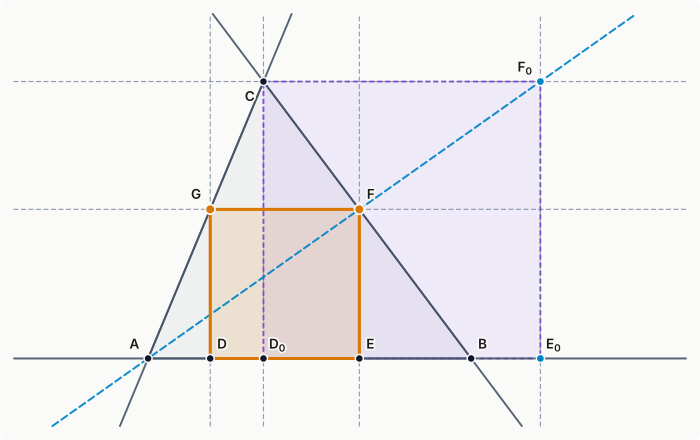
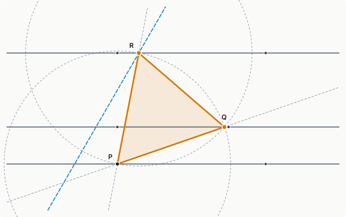
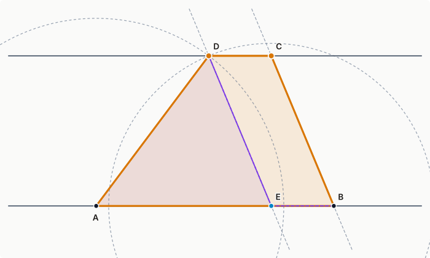
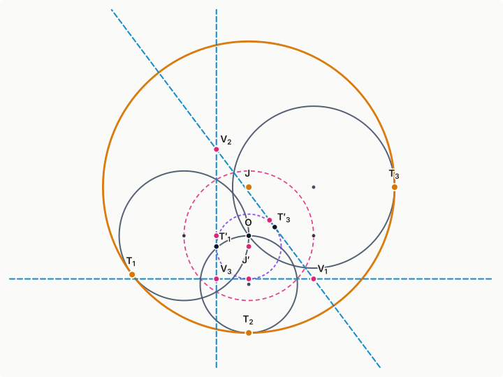
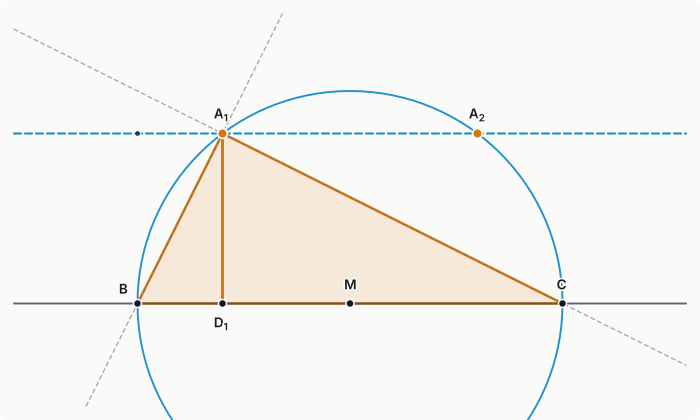
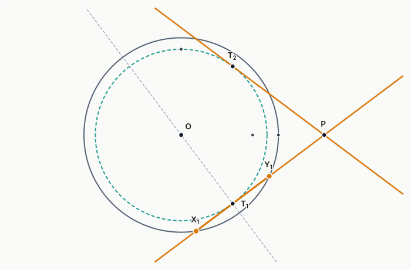
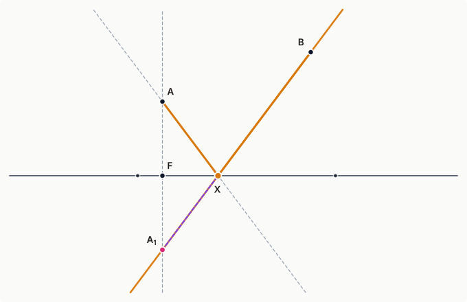

Demos¶
Exact Symbolic geometor.model Realizations of Petersen’s Heuristic Patterns
Every flagship method in Julius Petersen’s Methods and Theories (1866 / 1879) is realized in geometor.petersen.constructions as a 100% exact, float-free SymPy construction using Model(..., auto_intersect=False), explicit intersect / subconstruction DAGs, @proposition verification, and Rational Trigonometry invariants (quadrance, line_spread, cross_ratio).
Run the standalone Rich-formatted scripts directly from the repository root:
python demos/homothety_inscribed_square.py
python demos/rotation_three_parallels.py
python demos/translation_trapezoid.py
python demos/two_loci_apollonius.py
python demos/inversion_tangent_circle.py
1. Method of Similitude / Homothety — Inscribed Square (Problem 155, p. 29)¶
Constructor:
geometor.petersen.constructions.inscribe_square_by_homothety()Demo Script:
demos/homothety_inscribed_square.pyCodex Unit: Unit VI: Multiplication of Curves & Method of Similitude

Suppressing the condition \(F \in BC\) on Heronian \((13, 14, 15)\) triangle \(A = (0, 0)\), \(B = (14, 0)\), \(C = (5, 12)\), prototype square \(D_0 E_0 F_0 C\) of side \(h_c = 12\) yields \(F_0 = (17, 12)\). Homothetic ray \([A, F_0]\) meets \([B, C]\) at \(F = \left(\frac{119}{13}, \frac{84}{13}\right)\), producing exact inscribed square \(DEFG\) of rational side \(\frac{84}{13}\) (quadrance \(\frac{7056}{169}\)).
2. Theory of Revolution — Equilateral Triangle on Three Parallels (Problem 349, p. 67)¶
Constructor:
geometor.petersen.constructions.equilateral_on_three_parallels()Demo Script:
demos/rotation_three_parallels.pyCodex Unit: Unit V: Axial Reflection & Theory of Revolution

Taking \(P = (0, 0) \in L_1\) (\(y = 0\)) as pivot point with \(v = 60^\circ, f = 1\), revolving \(L_2\) (\(y = 1\)) by \(+60^\circ\) via Euclid I.1 produces \(L'_2: \sqrt{3}\,x - y + 2 = 0\), meeting \(L_3\) (\(y = 3\)) at \(R = \left(\frac{\sqrt{3}}{3}, 3\right)\) and rotating back to \(Q = \left(\frac{5\sqrt{3}}{3}, 1\right)\) over \(\mathbb{Q}(\sqrt{3})\), with exact side quadrance \(\frac{28}{3}\) and interior spread \(\frac{3}{4}\).
3. Parallel Translation — Trapezoid from Four Sides (Problem 259, p. 49)¶
Constructor:
geometor.petersen.constructions.trapezoid_from_four_sides()Demo Script:
demos/translation_trapezoid.pyCodex Unit: Unit IV: Parallel Translation & Replacing

For \((a, b, c, d) = (19, 5, 13, 15)\), translating leg \(BC\) parallel to upper base \(CD\) into \(ED\) concentrates all four given lengths into auxiliary triangle \(\triangle AED\) of sides \((14, 13, 15)\), yielding \(D = (9, 12)\) and \(C = (14, 12)\) on the integer lattice \(\mathbb{Z}^2\).
4. Method of Two Loci — Circle of Apollonius (Locus f, pp. 5, 11–12)¶
Constructor:
geometor.petersen.constructions.apollonius_two_loci()Demo Script:
demos/two_loci_apollonius.pyCodex Unit: Unit II: Loci of Points

Internal and external harmonic division points \(C = (10, 0)\) and \(C_1 = (30, 0)\) of \(A = (0, 0), B = (15, 0)\) in ratio \(2 : 1\) satisfy \(\operatorname{CR}(A, B; C, C_1) = -1\). Intersecting the Apollonius circle \((M, C)\) (\(M = (20, 0), R = 10\)) with parallel locus \(y = 8\) determines \(P_1 = (14, 8)\) and \(P_2 = (26, 8)\) with \(Q(P_1, A) = 260 = 4 \cdot 65 = 4\,Q(P_1, B)\) and orthogonal bisectors \([P_1, C] \perp [P_1, C_1]\).
5. Circle Inversion — Tangent Circle to Three Concurrent Circles (Problem 199, p. 36)¶
Constructor:
geometor.petersen.constructions.tangent_circle_by_inversion()Demo Script:
demos/inversion_tangent_circle.pyCodex Unit: Unit VII: Inverse Figures, Circle Systems & Constructibility

Inversion in \(\Omega(O, 12)\) transforms concurrent circles \(K_1(-12, 0)\), \(K_2(0, -9)\), \(K_3(12, 9)\) through \(O = (0, 0)\) into the \((18, 24, 30)\) right triangle \(V_1 = (12, -8)\), \(V_2 = (-6, 16)\), \(V_3 = (-6, -8)\) with incircle \(\omega'(J', 6)\) at \(J' = (0, -2)\). Inverting contact points \(T'_1, T'_2, T'_3\) back across \(\Omega\) yields \(T_1 = \left(-\frac{108}{5}, -\frac{36}{5}\right)\), \(T_2 = (0, -18)\), and \(T_3 = (27, 9)\), determining exact tangent circle \(\omega\) centered at \(J = (0, 9)\) of radius \(R = 27\).
6. Companion Unit Constructions (Units I, III & V.a)¶
Four-Part Schema & Discussion (*Problem 42, p. 15*) —
geometor.petersen.constructions.discussion_mean_proportional():
Loci of Lines / Concentric Chord Envelope (*Problem 220, p. 42*) —
geometor.petersen.constructions.equal_chords_line_locus():
Axial Reflection / Hero’s Shortest Optical Path (*Problem 338, p. 61*) —
geometor.petersen.constructions.hero_reflection_shortest_path():